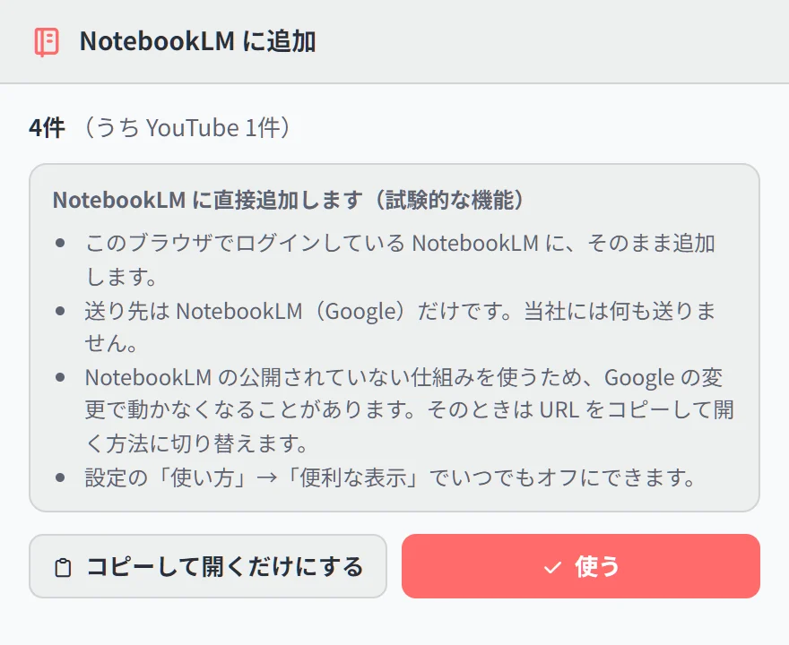
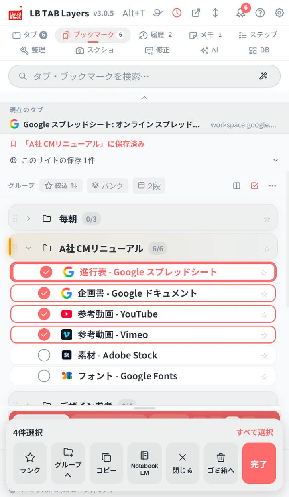

NotebookLM の拡張機能でできるのは、いま見ているページや、開いている複数のタブ、YouTube の動画の URL を、ノートブックのソースに手早く入れることです。ただ、複数の URL は、拡張機能がなくても「ソースを追加」にスペースか改行で区切って貼れば、まとめて入ります。拡張機能が省いてくれるのは、URL を集める手間です。選ぶときは、作り手・権限・送り先・Google へのログインの扱いを確かめます。なお NotebookLM は、2026 年 7 月から「Gemini Notebook」という名前になりました。
調べものをしていると、タブが 10 個、20 個と開きます。これを NotebookLM にまとめて読ませたい。そう思って「NotebookLM 拡張機能」と探すと、Chrome ウェブストアにはたくさんの拡張機能が並んでいて、どれを入れればいいのか迷います。
この記事では、NotebookLM に入れられるものを Google の公式ヘルプで確かめたうえで、拡張機能なしでできること、拡張機能が役に立つ場面、選ぶときに確かめることをまとめます。最後に、私たちの LB TAB Layers でできることも書きます。
📌 名前について：NotebookLM は、2026 年 7 月 16 日に「Gemini Notebook」という名前に変わりました（Google の発表）。同じ製品で、これまでのノートブックもそのまま使えます。公式ヘルプの本文も、いまは Gemini Notebook の名前で書かれています。この記事では、探している人の多い「NotebookLM」で書きます。拡張機能を探すときは、どちらの名前でも試してみてください。
NotebookLM に入れられるもの（2026 年 11 月時点）
NotebookLM では、読ませる資料を「ソース」と呼びます。公式ヘルプに載っている主なソースと、入れる前に知っておきたいことを表にしました。
| ソースの種類 | 知っておくこと |
|---|---|
| Web ページの URL | 入るのは本文のテキストだけです。画像、埋め込みの動画、リンク先のページは入りません。ペイウォール（有料の壁）のあるページは入れられません |
| YouTube の動画の URL | 公開されていて、字幕のある動画だけです（自動の字幕でも入ります）。入るのは文字起こしの部分です。アップロードから 72 時間たっていない動画は、入らないことがあります |
| PDF・Word・テキスト・Markdown・CSV・PowerPoint・ePub | アップロードできるファイルは、1 つ 200 MB までです |
| Google ドキュメント・スライド・スプレッドシート | スライドは 100 枚までです。ドライブから入れたソースは、元のファイルを直すと自動で同期されます |
| 音声ファイル | 入れるときに文字起こしされて、そのテキストがソースになります |
| 画像・貼り付けたテキスト・メモ | 画像は png・jpg・webp などに対応しています。コピーして貼った文章も、そのままソースにできます |
このほか、Google Play ブックスの対象の電子書籍や、Gemini とのチャットもソースにできます。
ソースとノートブックの上限
1 つのソースに入るのは 50 万語までです。ノートブックの数と、1 つのノートブックに入るソースの数は、プランで変わります。
| プラン | ノートブックの数 | 1 つのノートブックのソースの数 |
|---|---|---|
| AI プランなし（無料） | 100 | 50 |
| Google AI Plus | 200 | 100 |
| Google AI Pro | 500 | 300 |
| Google AI Ultra | 500 | 500 または 600（プランによる） |
ソースの数は、メモを除いた数です。公式ヘルプには、上限は変わることがある、と書かれています。無料のままなら、1 つのノートブックに入るソースは 50 件。開いているタブを次々に入れていくと、思ったより早く埋まります。
拡張機能がなくても、複数の URL はまとめて入れられる
先に知っておきたいのは、NotebookLM の標準の画面でも、URL を 1 つずつ入れなくていいということです。公式ヘルプには、複数の Web の URL を入れるときは、リンクをスペースか改行で区切る、と書かれています。ノートブックの左の「ソースを追加」を開いて、URL をまとめて貼れば足ります。
もう 1 つ、入れるものを探すところから NotebookLM に任せる方法もあります。ソースの欄の検索ボックスに調べたいことを入れると、Web や Google ドライブからソースの候補を出してくれます（Fast Research）。出てきた候補から、入れたいものを選んで取り込みます。多くのサイトを調べてレポートにまとめる Deep Research も、同じ欄から使えます。
つまり、「貼る」ところは標準の画面で足ります。手間が残るのは、開いているタブから URL を 1 つずつ集めるところです。
それでも拡張機能が欲しくなる場面
- タブをたくさん開いている — 10 個、20 個のタブから URL を 1 つずつコピーするのは、それだけで手間です
- ページを見ているその場で入れたい — 読んでいる途中で NotebookLM のタブへ行き来すると、読む流れが切れます
- YouTube の動画をまとめて入れたい — 再生リストや検索結果に並んだ動画を、1 本ずつ開いて URL をコピーするのは大変です
- 毎週のように繰り返す — 集めて、入れて、読む（聴く）を習慣にするなら、入れる手間は小さいほど続きます
ソースを入れるための拡張機能がしてくれることは、大きく 2 つに分けられます。
| 種類 | していること | 貼る作業 |
|---|---|---|
| URL を集めてコピーする | 開いているタブなどの URL をまとめてコピーして、NotebookLM を開く | 自分で「ソースを追加」に貼る |
| ノートブックへ直接入れる | 送り先のノートブックを選ぶと、ソースに追加するところまで行う | いらない |
直接入れるほうが、手数は少なくなります。そのかわり、拡張機能が NotebookLM とやりとりをするので、次の章のことを確かめてから入れると安心です。
ストアには、ノートブックのフォルダ分けやタグ付けなど、NotebookLM の画面に機能を足す種類の拡張機能もあります。この記事では、ソースを入れるための拡張機能に絞って書きます。
なお、この記事で確かめた公式ヘルプの「ソースを追加する」の手順に、拡張機能を使う方法は載っていません（2026 年 11 月時点）。名前に NotebookLM や Gemini Notebook と入っていても、Google が作った拡張機能とは限りません。作り手は、ストアのページの「提供元」で確かめられます。
拡張機能を選ぶときに確かめる 5 つのこと
誰が作ったか
Chrome ウェブストアのページの下のほうに「詳細」の欄があり、提供元、デベロッパー、最後に更新された日が載っています。似た名前の拡張機能がいくつもあるので、入れる前にここを見ます。
どんな権限を求めるか
「Chrome に追加」を押すと、その拡張機能が求める権限が出ます。Chrome ウェブストアのヘルプでは、「閲覧したすべてのウェブサイト上のユーザーデータ」の権限は、見たすべてのページのデータを読み取り、変更できるもの、と説明されています。警告が出たから危険、というわけではありません。その権限が、その拡張機能のすることに要るのかを見ます。入れたあとでも、サイトへのアクセスを「クリックされた場合のみ」「特定のサイト」「すべてのサイト」から選び直せます。
ページの情報が、どこを通って、どこに残るか
入れるページの URL や本文が、Google の NotebookLM へ直接行くのか、拡張機能の作り手のサーバーを通るのか。ストアのページの「プライバシー」の欄と、プライバシーポリシーで確かめます。送り先と送るものが、具体的に書いてあるものを選びます。集めた URL の一覧が、拡張機能の中だけに残るのか、ブックマークのように拡張機能の外にも残るのかも、見ておきます。
Google へのログインをどう扱うか
NotebookLM は、Google アカウントにログインして使います。直接入れる拡張機能なら、ブラウザでログインしている状態をそのまま使うのか、拡張機能の中で改めてログインや許可を求めるのか、ログインの情報を拡張機能が保存するのか。ここが説明されているかを見ます。
動かなくなったときに、手で貼る方法へ戻れるか
直接入れる機能が動かないときに、URL をコピーして自分で貼る方法に切り替えられると、作業が止まりません。集めた URL を、コピーや書き出しで取り出せるかを見ておきます。
権限の見方は、タブ管理拡張の「権限」の見方にくわしく書いています。
拡張機能とは別に、NotebookLM に入れたあとのデータの扱いは、Google の説明を見ます。公式ヘルプには、フィードバックを送らない限り、データがトレーニングに使われることはない、と書かれています。アップロードする権利のない資料は入れないように、とも書かれています。
ソースは、入れる前に絞る
拡張機能を入れると、まとめて入れるのが楽になります。楽になるぶん、開いていたものを全部入れてしまいがちです。ソースの数には上限がありますし、関係のないページが混ざると、何のノートブックなのかが分かりにくくなります。
- 集めると、分けるを分ける — まず気になったページを集めて、あとでまとめて「入れる・入れない」を決めます
- テーマごとにノートブックを分ける — 1 つのノートブックに何でも入れず、案件やテーマで分けます
- 入れたページを、手元にも残す — NotebookLM に入れた URL を、ブックマークのフォルダなどにも残しておくと、あとで元のページへ戻れます
NotebookLM の側でも、ソースが 5 つ以上になると、自動でラベルを付けて分類してくれます。集め方の考え方は、情報収集で頭が疲れる本当の理由にまとめています。
LB TAB Layers でできること
ここからは、私たちが作っている Chrome 拡張機能「LB TAB Layers」の話です。LB TAB Layers は、タブとブックマークを、サイドパネルで案件ごとにしまう道具です。NotebookLM 専用の拡張機能ではありません。「集める → 案件のグループにしまう → 送る」の最後に、NotebookLM へ送る機能があります。
| 送りたいもの | 操作 |
|---|---|
| 選んだタブ（開いているもの・保存したもの） | 選択 → 下のバーの「NotebookLM」 |
| グループまるごと | グループを右クリック →「NotebookLM に送る」 |
| いま見ているページ、またはリンク | ページやリンクを右クリック →「NotebookLM に追加」 |
| YouTube のページに並んでいる動画 | YouTube のページを右クリック →「このページの動画の URL をまとめてコピー（NotebookLM へ）」 |

送り方は 2 つから選べる
はじめて使うときに、小窓に説明が出ます。何をどこへ送るのかを確かめてから、送り方を選べます。
- 直接追加する（「使う」） — 送り先のノートブックを選ぶか、新しく作ると、選んだページがソースにまとめて入ります
- コピーして開くだけにする — URL をまとめてコピーして、NotebookLM を開きます。「ソースを追加」には自分で貼ります。この場合、拡張機能から NotebookLM へは送信しません
「確かめる 5 つのこと」に、自分たちで答えると
- 作り手 — 株式会社リキッドブロック（神戸の映像制作の会社）です
- 権限 — タブやブックマークのほか、「すべてのサイト」へのアクセスも使っています。何のために使っているかは、権限の記事に書いています
- 送るもの — 選んだページ・動画の URL と、追加先のノートブックの名前です。ノートブックの一覧を出すために、NotebookLM からノートブックの名前と件数を読み取ります
- 通る場所 — Google の NotebookLM へ直接送ります。当社のサーバーは通りません
- Google へのログイン — このブラウザでログインしている状態のまま追加します。パスワードやログインの情報を、拡張機能が保存することはありません
- 同意 — 直接追加は、はじめの説明に同意したときだけ動きます。設定の「使い方」→「便利な表示」で、いつでもオフにできます
- 動かなくなったとき — 直接追加は試験的な機能です。NotebookLM の公開されていない仕組みを使うため、Google の変更で動かなくなることがあります。そのときは「URL をコピーして NotebookLM を開く」に切り替えられます
- 残る場所 — グループにしまったタブは、Chrome のブックマークに保存されます。NotebookLM に入れたページを、手元にも残しておけます
送れるのは http・https のページで、同じ URL は 1 つにまとめて送ります。会員限定のページなど、NotebookLM が読めないページは入りません。NotebookLM に送る機能は PRO の機能です（入れてから 30 日間のお試しでは使えます）。
手順は【機能ガイド】開いているタブを NotebookLM にまとめて追加するに、画面つきでまとめています。集めた記事を音声にして聴く使い方は、「あとで読む」が積読になる人へをどうぞ。
どれを選べばいいか
- ときどき、数本を入れるだけ → 拡張機能はいりません。「ソースを追加」に、URL をスペースか改行で区切って貼ります
- 何を入れるかから探したい → NotebookLM のソースの検索（Fast Research・Deep Research）を使います
- 開いているタブを、よくまとめて入れる → ソースを入れるための拡張機能が役に立ちます。上の 5 つを確かめてから入れます
- タブやブックマークの整理も、いっしょにしたい → LB TAB Layers のように、しまう道具に「送る」がついたものが合います
- NotebookLM の画面に、フォルダ分けなどを足したい → その種類の拡張機能を探します。LB TAB Layers の役目は、送るところまでです
拡張機能は、入れる手間を小さくしてくれます。何を入れるかを決めるのは、自分です。集めて、絞って、入れる。この順を決めておくと、ノートブックが資料の山になりません。
よくある質問
Q. NotebookLM に、Google 公式の Chrome 拡張機能はありますか？
この記事で確かめた公式ヘルプの「ソースを追加する」の手順に、拡張機能を使う方法は載っていません（2026 年 11 月時点）。名前に NotebookLM や Gemini Notebook と入っていても、Google が作った拡張機能とは限りません。作り手は、Chrome ウェブストアのページの「提供元」で確かめられます。
Q. NotebookLM と Gemini Notebook は、別のものですか？
同じ製品です。NotebookLM は、2026 年 7 月に「Gemini Notebook」という名前に変わりました。Google は、これまでのノートブックもそのまま使える、と説明しています。
Q. 拡張機能なしで、複数の URL をまとめて入れられますか？
入れられます。公式ヘルプには、複数の Web の URL を入れるときは、リンクをスペースか改行で区切る、と書かれています。ノートブックの「ソースを追加」に、まとめて貼ります。
Q. YouTube の動画は、どれでも入れられますか？
公開されていて、字幕のある動画だけです（2026 年 11 月時点）。入るのは文字起こしの部分で、話す声の入っていない動画は入れられません。アップロードから 72 時間たっていない動画は、入らないことがあります。
Q. ソースは、いくつまで入れられますか？
無料の場合、1 つのノートブックに 50 件まで、ノートブックは 100 件までです（2026 年 11 月時点）。Google AI Plus は 100 件、Pro は 300 件に増えます。上限は変わることがあるので、公式ヘルプで確かめてください。
Q. LB TAB Layers から NotebookLM に送ると、ページの情報はどこを通りますか？
選んだページ・動画の URL と、追加先のノートブックの名前を、このブラウザの Google のログインのまま、Google の NotebookLM へ直接送ります。当社のサーバーは通りません。はじめの説明に同意したときだけ動き、設定でいつでもオフにできます。
▶ 実際の操作を動画で見る
サイドバーで、ブックマークとタブをいっしょに管理する様子です。
調べたタブを、案件ごとにしまって、ノートブックへ。
タブを選んで「NotebookLM」を押すだけ。拡張機能のアカウント登録なし · 保存先は Chrome のブックマーク · 30日間すべての機能を無料で
Chrome に無料で追加 →